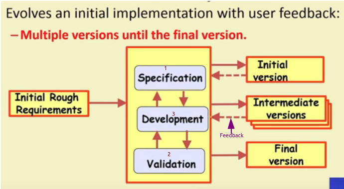

Evolutionary Model
- First develop the core modules of the software.
- The initial skeletal software is refined into increasing levels of capabillity(iterations)
- In each iteration, adding new functionalities in successive versions.
- These iterations are called mini waterfall hence software developed over several “Mini waterfalls”
- The result of a single iteration:
→ Ends with delivery of some tangible code
→ An incremental improvement to the software -- leads to evolutionary development.
- Outcome of each iteration is that some code is tested and then integrated into execultable system.
- Iteration lenght is short and fixed generally 2 and 6 weeks.
- Development takes many iterations(for ex : 10-15)
- Requirements are allowed to change as well as the design.
→ Successive versions
⇒ Functioning systems capable of performing some useful work.
⇒ A new release may include new functionalitiy:
• Also existing functionality in the current release might have been enhanced.

Advantages
- User get a chance to experiment with partially developed system much before the full working version is released which helps in finding exact user requirements.
- Core modules get tested thoroughly which reduces chances of errors in final delivered software
- Better management of comlexity by developing one increment at a time.
- Better management of changing requirements.
- Can get customer feedback and incorporate them much more efficiently.
- Frequent releases allows developers to fix unanticipated problems quicker.
Disadvantages
- The process is intangible as no regular or well defined deliverables.
- The process is unpredictable
- Systems are rather poorly structured
- Systems may not even converge to a final version.